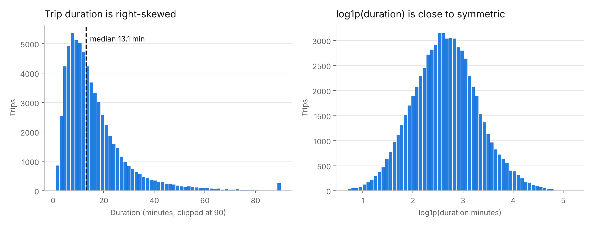
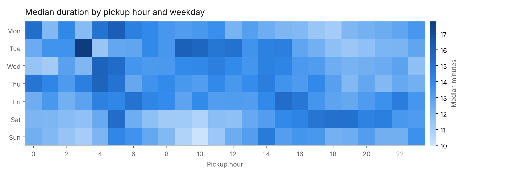
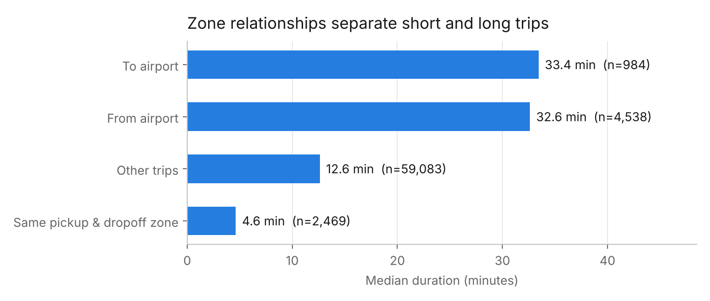
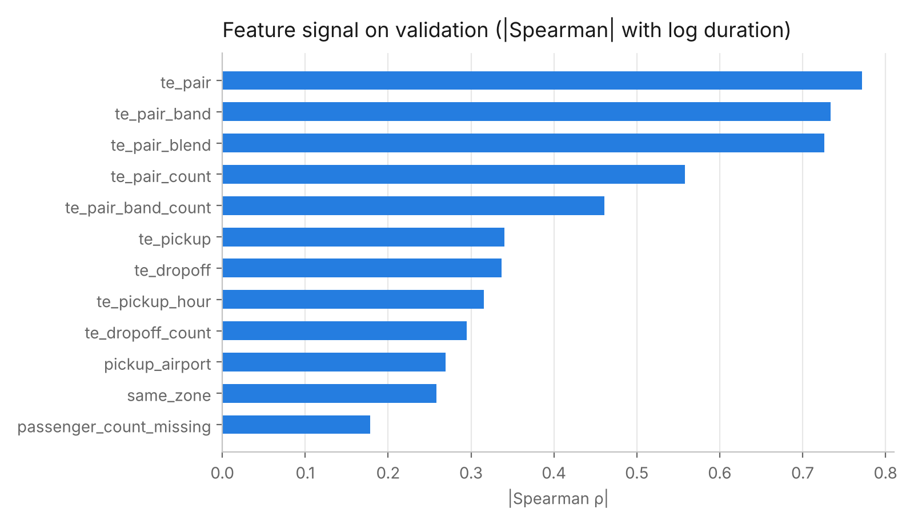
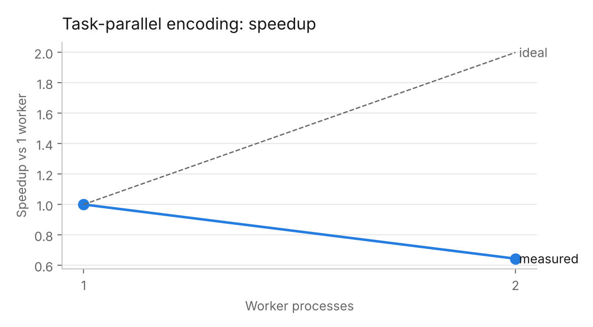

GROUP 20 · ETA PREDICTION · MEMBER B
EDA & feature engineering
Local development results. Re-run on Rockhill and regenerate this page with make_b_materials.py before the poster is finalised.
Local development run on A's 100,000-trip sample. EDA uses the training period only (67,074 trips, before 2026-01-22).
13.1 minmedian trip (skew 2.66)
33 vs 5 minairport vs same-zone
31numeric features
−24%MAE, zone-pair lookup vs constant
What the data shows
- Right-skewed target: median 13.1 min, mean 16.7 min, 95th percentile 42.2 min → we model
log1p(duration).
- Location dominates: median 33.4 min to an airport, 32.6 min from an airport, 12.6 min for other trips and 4.6 min within the same zone.
- Time adds a smaller shift: hour × weekday medians range from 10 to 18 min.

Duration (left) and log1p(duration) (right), training period.

Median duration by pickup hour and weekday.

Airport and same-zone trips (medians).

Strongest features on validation (|Spearman|).Features
| Group | Features |
|---|
| Calendar | hour, weekday, weekend, US holiday, day of month, cyclic sin/cos of time-of-day and weekday |
| Our peak definition | night 00–06 · morning peak 06–10 · midday 10–16 · afternoon peak 16–20 · evening 20–24 |
| Zone flags | airport pickup/dropoff (EWR 1, JFK 132, LGA 138), same pickup and dropoff zone |
| Target encodings | smoothed mean log-duration per pickup zone, dropoff zone, zone pair, zone pair × time band, pickup zone × hour, plus log counts (reliability) |
| Passenger | count (train-median imputation) + missing indicator |
Leakage control
- Only pickup-time inputs: no distance, fares, tips, payment type or dropoff time.
- All learned statistics are fitted on the training split only. Training rows get 5-fold out-of-fold encodings, so no row sees its own label.
- Chronological splits: validation from 2026-01-22, test from 2026-01-27.
Task parallelism & determinism
The 30 independent encoding tasks (5 folds × 5 tables, plus 5 for evaluation) run in a process pool. A fixed fold seed and order-preserving map make the output bit-identical to serial in every run. No speedup at this input size (0.64× at 2 workers): process start-up and data transfer outweigh the small amount of work. Measure speedup on the full Rockhill data.
